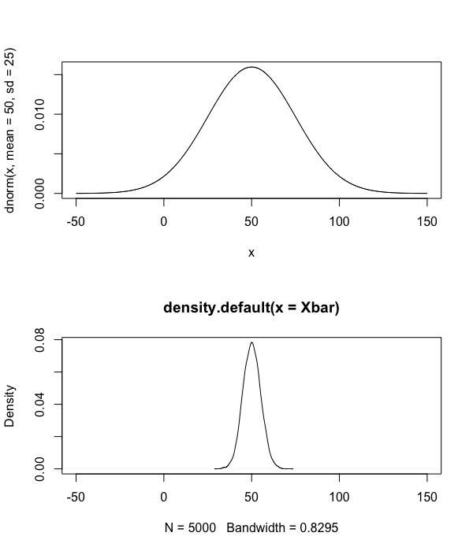
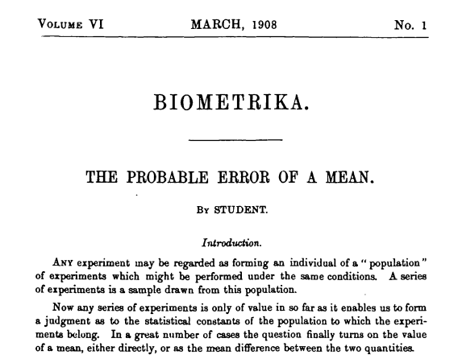
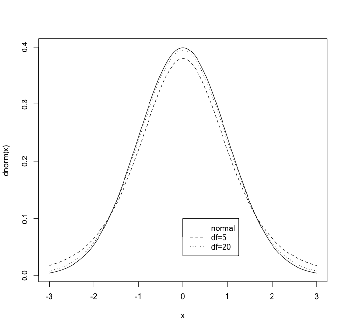
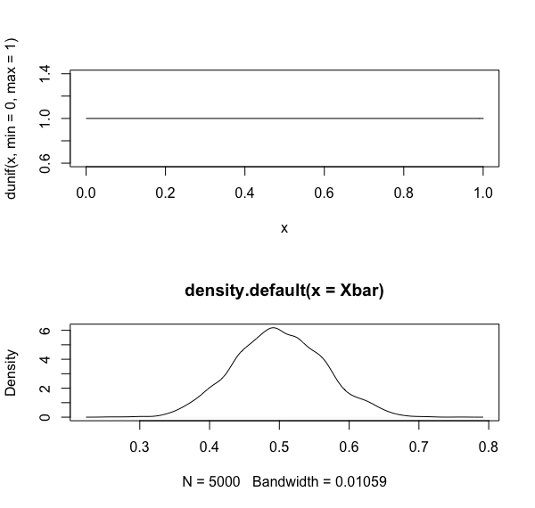
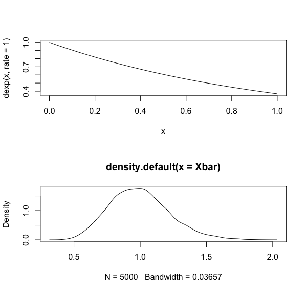
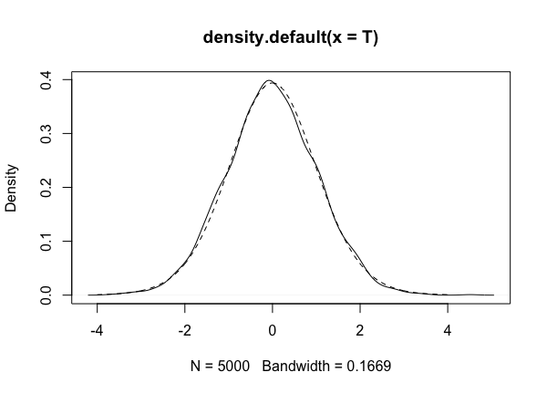
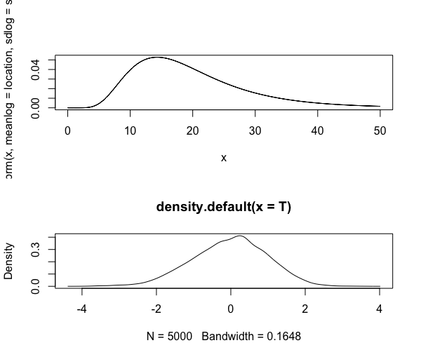

Week 3 lecture notes - PSYC 5316
In studies, our data amounts to a sample of a population. Based on our work in Week 2, we know that the sample mean \(\overline{x}\) is the maximum likelihood estimator of the population mean \(\mu\) (assuming a normal distribution as our model). However, \(\overline{x}\) is still an estimate, which means there is uncertainty in our measurement
Goal: develop a method that will give us a range of values for \(\mu\) based on the available data \(\overline{x}\)
Sampling distributions
Definition: a sampling distribution for an estimator is the probability distribution for the values of that estimator.
Example: this week we will work exclusively with the sampling distribution for the sample mean, denoted \(\overline{X}\).
- Note: the notation can be confusing, so let's be very specific:
- \(\overline{x}\) denotes the sample mean (an estimator)
- \(\overline{X}\) denotes the sampling distribution
simulation of sampling distribution using R
We can simulate sampling distributions in R. Below is some code that you can play with, but lets first understand the logic of the code. For this simulation, lets assume our sample size is \(n=25\). Then, the basic loop is as follows:
- take a sample of size 25 from the population. Here, we'll assume that the population is normal with mean 50 and standard deviation 20.
- compute the sample mean \(\overline{x}\) of this sample
- store the mean in a vector
- do this a bunch of times (we'll do 5000 loops).
Here is the code that accomplishes these steps:
N = 5000
Xbar=rep(0,N)
for (i in 1:N){
Xsamp=rnorm(n=25, mean=50, sd=25)
Xbar[i]=mean(Xsamp)
}
Now, Xbar is a vector of 5000 sample means, which we can do all kinds of things with. First, let's plot its density. For comparison, we'll plot both the population density AND the sampling distribution together:
par(mfrow=c(2,1)) x=seq(-50,150,0.1) plot(x,dnorm(x, mean=50, sd=25), type="l") plot(density(Xbar),xlim=c(-50,150))

You might immediately notice a few things:
- the sampling distribution appears normally distributed
- the mean of the sampling distribution is equal to the mean of the population
- the standard deviation of the sampling distribution is much less than the population standard deviation.
We can check claims 2 and 3 easily:
mean(Xbar) sd(Xbar)
You should discover that the mean of \(\overline{X}\) is also approximately equal to 50, and the standard deviation of \(\overline{X}\) is approximately 5. This is no accident, as is nicely summarized in the following:
Fact: when randomly sampling from a normal distribution, we have:
- the sampling distribution \(\overline{X}\) is normal
- \(E(\overline{x})=\mu\)
- \(\sigma_{\overline{X}} = \frac{\sigma}{\sqrt{n}}\), where \(n\) = sample size
computing probabilities of samples
Consider an experiment that was designed to understand the effect of ozone on weight gain in rats. Suppose that weight gain in rats is normally distributed with \(\mu=14\) and \(\sigma=6\).
Suppose further that we test 22 randomly sampled rats. We administer an ozone "treatment" to these rats and then subsequently measure their weight gain. We find that \(\overline{x}=11\).
Is it reasonable to expect a sample mean of \(\overline{x}=11\) from the parent population? Why/why not?
To solve this, think back to our work above. Can we describe the distribution of sample means (assuming a sample size of \(n=22\))?
- the sampling distribution \(\overline{X}\) is normally distributed
- \(\mu_{\overline{X}}=22\)
- \(\sigma_{\overline{X}} = \frac{\sigma}{\sqrt{n}} = \frac{6}{\sqrt{22}} = 1.279\)
Based on this, we can use the pnorm function to compute the probability of obtaining a sample mean of 11 or less.
pnorm(11, mean=14, sd=1.279)
We find that the probability of obtaining a sample mean of 11 or smaller is low. Specifically, \(p(\overline{x}\leq 11)=0.0095\).
Alternative: transform to \(z\)-scores
A more classical approach to this problem is to transform the raw data to a \(z\)-score. Recall that if \(X\) is normally distributed with mean \(\mu\) and standard deviation \(\sigma\), we can standardize \(X\) via the transformation:
\[ Z=\frac{X-\mu}{\sigma} \]
This standard normal distribution has mean 0 and standard deviation 1, and is the basis of all normal tables in the back of textbooks.
Another advantage of transforming to a \(z\) score is that the pnorm computation is very easy!
In our example above (the rats), we could do the following:
- convert the raw score \(\overline{x}=11\) to a \(z\)-score:
\[ z=\frac{\overline{x}-\mu_{\overline{X}}}{\sigma_{\overline{X}}}=\frac{\overline{x}-\mu}{\sigma/\sqrt{n}} = \frac{11-14}{6/\sqrt{22}} = -2.35 \]
- compute \(p(z\leq -2.345)\)
pnorm(-2.345)
Confidence interval of population mean
For this section, we will assume that all parent distributions are normal. We'll cover non-normality later.
Case 1: assume \(\sigma\) is known
Recall from above that \(Z=\frac{\overline{X}-\mu}{\sigma/\sqrt{x}}\) has a standard normal distribution. Specifically, this gives us a few known facts about \(Z\). In particular:
- \(p(-1.96 \leq Z \leq 1.96) = 0.95\)
Note: you can verify this claim in R:
pnorm(1.96)-pnorm(-1.96)
Let's work further with this. If we substitute the expression for \(Z\), we get
\[ p\Biggl( -1.96 \leq \frac{\overline{X}-\mu}{\sigma/\sqrt{n}} \leq 1.96\Biggr) = 0.95 \]
We can rearrange terms in this inequality to express it in terms of \(\mu\):
\[ p\Biggl( \overline{X}-1.96\frac{\sigma}{\sqrt{n}} \leq \mu \leq \overline{X}+1.96\frac{\sigma}{\sqrt{n}}\Biggr) = 0.95 \]
This is nice, because it says that even though we don't know the exact value of the population mean \(\mu\), we know there is a 95% probability that its value is between
\[ \overline{X}-1.96\frac{\sigma}{\sqrt{n}} \]
and
\[ \overline{X}+1.96\frac{\sigma}{\sqrt{n}} \]
This interval
\[ \Biggl(\overline{X}-1.96\frac{\sigma}{\sqrt{n}}, \overline{X}+1.96\frac{\sigma}{\sqrt{n}}\Biggr) \]
is called the 95% confidence interval for \(\mu\).
Example: Suppose we obtained \(\overline{x}=54\) from a sample of \(n=25\). Suppose further that we know that the population is normal, with unknown mean \(\mu\), but known standard deviation \(\sigma=9\). Construct a 95% confidence interval for the mean \(\mu\).
From above, we compute
\[ \Biggl(54 - 1.96\frac{9}{\sqrt{25}}, 54 + 1.96\frac{9}{\sqrt{25}}\Biggr) = (50.5,57.5) \]
Thus, we are 95% confident that the population mean \(\mu\) is between 50.5 and 57.5
General case:
There is nothing special about the quantity 95%. We can compute any confidence interval we wish!
Example: For 16 observations randomly sampled from a normal distribution, imagine that \(\overline{X}=32\) and \(\sigma =4\). Construct a 90% confidence interval for \(\mu\).
To construct a 90% interval, we must know the \(z\) scores that contain 90% of the standard normal distribution. That is, we need to know the 0.05 quantile and the 0.95 quantile (this is because we need a total of 10% combined in the upper and lower tails).
qnorm(0.05) qnorm(0.95)
We see that the two quantiles for the 90% confidence interval are \(\pm 1.645\). Thus, we can compute:
\[ \Biggl(32 - 1.645\frac{4}{\sqrt{16}}, 32 + 1.645\frac{4}{\sqrt{16}}\Biggr) = (30.355, 33.645) \]
Thus, we are 95% confident that \(\mu\) is between 30.355 and 33.645.
Case 2: assume \(\sigma\) is NOT known
If \(\sigma\) is NOT known, we will need an estimator for it.
Recall that the definition of standard deviation is usually given as the square root of the variance, given by
\[ \frac{\sum (x-\mu)^2}{n} \]
Unfortunately, this formula is well known to underestimate the actual value of the variance. That is,
\[ E[\text{variance}] = \sigma^2 - \frac{\sigma^2}{n} \]
However, if we adjust the formula for variance slightly to:
\[ s^2 = \frac{\sum (x-\mu)^2}{n-1} \]
it can be shown that \(E[s^2] = \sigma^2\). That is, \(s\) is an unbiased estimate of \(\sigma\).
Student's \(T\) distribution
In 1908, William Gosset figured out how to quantify error when sampling from normal distributions from which the the standard deviation is unknown. He published his work using the psuedonym "Student"

Essentially, his method is based on computing something similar to the \(z\) score. Let
\[ T=\frac{\overline{X}-\mu}{s/\sqrt{n}} \]
Notice that the only difference from \(Z\) is that we have replaced \(\sigma\) by the unbiased estimator \(s\).
It turns out that the distribution \(T\) is NOT a normal distribution; moreover, its shape depends on the sample size \(n\). Specifically, the parameter is df (degrees of freedom), where \(df=n-1\).
Executing the following R commands will produce a nice plot demonstrating this:
dev.off()
x=seq(-3,3,0.01)
plot(x,dnorm(x),type="l")
lines(x,dt(x,df=5),lty=2)
lines(x,dt(x,df=20),lty=3)
legend(0,0.1,c("normal","df=5","df=20"),lty=1:3)
As you can see in the figure, the T curves have heavier tails than the normal curve. As 
Computing confidence intervals with with \(T\)
When \(\sigma\) is not known, we can use the value of \(s\) as an estimate for the population standard deviation. However, as we just saw, the resulting sampling distribution \(T\) is not normal. Thus, we can no longer use our old friend 1.96 to compute a 95% confidence interval. We have to compute confidence intervals using different bounds.
Example: Lets go back to our rats from above. We tested 22 rats and got a sample mean of \(\overline{x}=11\). Assume further that our sample standard deviation is \(s=19\). Compute a 90% confidence interval for the population mean \(\mu\).
Similar to before, we will compute the interval
\[ \Biggl(\overline{X}-c\cdot \frac{s}{\sqrt{n}}, \overline{X}+c\cdot \frac{s}{\sqrt{n}}\Biggr) \]
To find \(c\), we need to know the 0.05 and 0.95 quantiles of the \(T\) distribution on 21 degrees of freedom.
qt(0.05, df=21) qt(0.95, df=21)
Thus, we see that our interval is:
\[ \Biggl(11-1.72\cdot \frac{19}{\sqrt{22}}, 11+1.72\cdot \frac{19}{\sqrt{22}}\Biggr) = (4.03, 17.97) \]
Example: Suppose we test a new reading instruction method on 4th graders and obtain the following scores on a reading test:
12, 20, 34, 45, 34, 36, 37, 50, 11, 32, 29
Suppose further that the standard methods of reading instructions produce an average score on this test of 25. Does the new reading method increase reading scores?
To answer this, we will compute a 95% confidence interval for \(\mu\), the population of reading scores under this NEW method:
read=c(12,20,34,45,34,36,37,50,11,32,29) length(read) # easy way to compute sample size Xbar=mean(read) s=sd(read) c=qt(0.975,df=10) # compute 0.975 quantile Xbar-c*s/sqrt(10) # lower limit Xbar+c*s/sqrt(10) # upper limit
We can see that our 95% confidence interval is (22.2,39.6). Since this interval contains 25, we are not confident that the new reading method increases reading scores.
What happens when sampling from non-normal distribution?
Everything we've done so far assumes that the underlying distribution is normal. However, this is surely not the case. Thankfully, we have some powerful mathematical results at our disposal that should help to quell our fears!
Central limit theorem - if \(n\) is large enough, \(Z\) has standard normal distribution
This does leave a pressing question: how large must \(n\) be?
There is no simple answer. Lets investigate:
Case 1 – assume population comes from uniform distribution
N=5000
Xbar=rep(0,N)
for (i in 1:N){
Xsamp=runif(n=20, min=0, max=1)
Xbar[i]=mean(Xsamp)
}
par(mfrow=c(2,1))
x=seq(0,1,0.01)
plot(x, dunif(x, min=0, max=1), type="l")
plot(density(Xbar))

As you can see, the distribution of samples looks fairly normal
Case 2 – assume population comes from exponential distribution
N=5000
Xbar=rep(0,N)
for (i in 1:N){
Xsamp=rexp(n=20, rate=1)
Xbar[i]=mean(Xsamp)
}
x=seq(0,1,0.01)
plot(x, dexp(x, rate=1), type="l")
plot(density(Xbar))

Once again, the sampling distribution looks pretty normal, even with relatively small sample size (\(n=20\))
Is \(T\) distribution robust?
Recall that confidence intervals based on \(T\) scores assume normality. How robust is the \(T\) distribution to violations of this assumption?
- Case 1: heavy tailed distributions
Let's simulate a contaminated normal distribution. This is a distribution where scores come from two different underlying normal distributions. In this case, we'll model the case where both distributions have the same mean, but different standard deviations.
First, we define a function in R to randomly generate scores from such a beast:
rcnorm <- function(n,mean,sd1,sd2,prob){
x0 = rnorm(n, mean, sd=sd1)
x1 = rnorm(n, mean, sd=sd2)
flag = rbinom(n, size=1, prob)
return(x0*(1-flag) + x1*flag)
}
Now, we will do as above and draw 5000 samples of size 20, computing the T-score each time and then plotting the resulting sampling distribution compared to a theoretical \(T\) distribution.
dev.off()
N=5000
T=rep(0,N)
for (i in 1:N){
samp=rcnorm(n=20, mean=50, sd1=3, sd2=10, prob=0.5)
T[i]=(mean(samp)-50)/(sd(samp)/sqrt(20))
}
x=seq(-4,4,0.01)
plot(density(T))
lines(x,dt(x,df=19),lty=2)

As you can see, our empirical distribution of \(T\) scores (solid line) looks similar to the theoretical \(T\) distribution that assumes normality (dashed line). However, they are slightly different, as we can see with quantile calculations:
qt(c(0.025,0.975),df=19)
In the theoretical \(T\) distribution, 95% of the \(t\) scores are between -2.09 and 2.09.
sum(T>-2.09 & T<2.09)/5000
However, in our empirical distribution, this same range accounts for almost 96% of our \(t\) scores. The fact that they do not match may not bode well for more serious violations of normality.
- Case 2: skewed distributions
As a last demonstration, lets take the case where the underlying distribution has a skew. One such distribution is the lognormal distribution.
First, let's try a small sample (\(n=20\)):
# some stuff that you need to make it work!
m <- 20
s <- 10
location <- log(m^2 / sqrt(s^2 + m^2))
shape <- sqrt(log(1 + (s^2 / m^2)))
# small sample: n=20
N=5000
T=rep(0,N)
for (i in 1:N){
samp=rlnorm(n=20, meanlog=location, sdlog=shape)
T[i]=(mean(samp)-m)/(sd(samp)/sqrt(20))
}
par(mfrow=c(2,1))
x=seq(0,50,0.01)
plot(x,dlnorm(x,meanlog=location,sdlog=shape),type="l")
plot(density(T))

As you can see in the figure, the distribution of \(T\) scores no longer appears symmetric about 0. We can verify this fact with a quantile calculation for our empirical distribution:
quantile(T,probs=c(0.025, 0.975))
In fact, if we use the usual computation for a 95% interval (i.e., (-2.09, 2.09), we only get about 93% coverage (as verified in the following computation):
sum(T>-2.09 & T<2.09)/5000
Does it get better with a large sample? Lets find out with \(n=200\):
N=5000
T=rep(0,N)
for (i in 1:N){
samp=rlnorm(n=200, meanlog=location, sdlog=shape)
T[i]=(mean(samp)-m)/(sd(samp)/sqrt(200))
}
x=seq(0,50,0.01)
plot(x,dlnorm(x,meanlog=location,sdlog=shape),type="l")
plot(density(T))

Looks better. Lets verify.
quantile(T, probs=c(0.025, 0.975)) sum(T>-2.09 & T<2.09)/5000
As you can see, though better, our empirical distribution of \(T\) scores is not equivalent to the theoretical distribution.
Moral: contrary to what you might hear, the \(t\)-score is NOT robust to violations of normality!